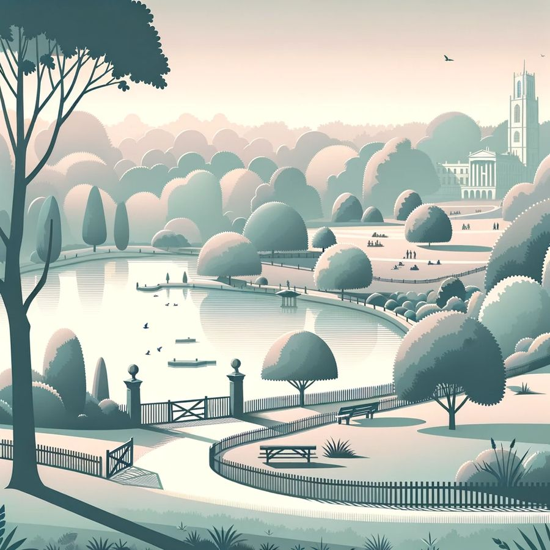
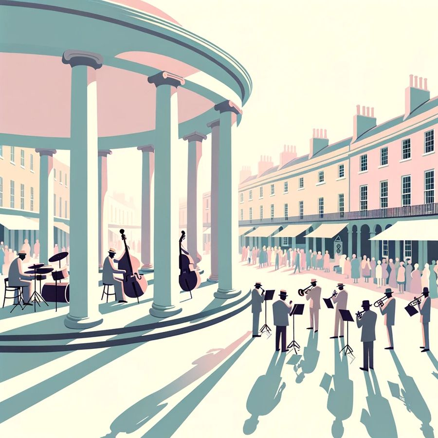

Free audio walking tour
Royal Tunbridge Wells
8 stops · about 20 minutes of listening · about 1 km on foot
The Great Hall, Mount Pleasant Road
Opposite Tunbridge Wells station
Best with headphones. No headphones? Hold the phone to your ear.
Look up when you cross roads. Pause the tour whenever you need to.
Free. No app, no sign-up. Save it to your phone to listen without signal.
Royal Tunbridge Wells
Welcome back
We kept your place.
Introduction
Nothing plays until you are ready.
Up next · stop 2
Tunbridge Wells Station
About 4 minutes · 320 m
Follow the High Street downhill.
The narration also tells you the way.
Before you set off
Walk safely
The rest of the tour is on the streets of Tunbridge Wells. Please read this once.
Look up when you cross a road, and only cross where it is safe. Pause the tour whenever you need to.
Mind steps, kerbs and uneven paving, especially on the Pantiles.
Under 16? Please do the walk with a parent or guardian.
Keep the volume low enough to hear traffic around you.
Swipe the map sideways to see the whole walk

8 of 8 stops
Thank you for walking with us
We hope you enjoyed Royal Tunbridge Wells.
Settings & help
Save all 8 stops to this phone (about 21 MB) so the tour plays with no signal. Best done on wifi.
I can’t hear anything
Turn the volume up with the buttons on the side of your phone, check your headphones are connected, then press play again. The iPhone silent switch does not mute the tour.
The sound stops when I lock my phone
Press play before you lock the phone and keep this page open. If it still stops, turn off Low Power Mode, then press play on the lock screen.
I lost my place
Open the tour again. It remembers the stop and the time. You can also pick any stop from Map & stops.
There’s no signal
Any stop you have already played is saved on your phone. Use “Save the tour to this phone” above to save every stop in advance.
Which way do I walk?
The narration tells you the way. Each stop also has a Directions button that opens your maps app.